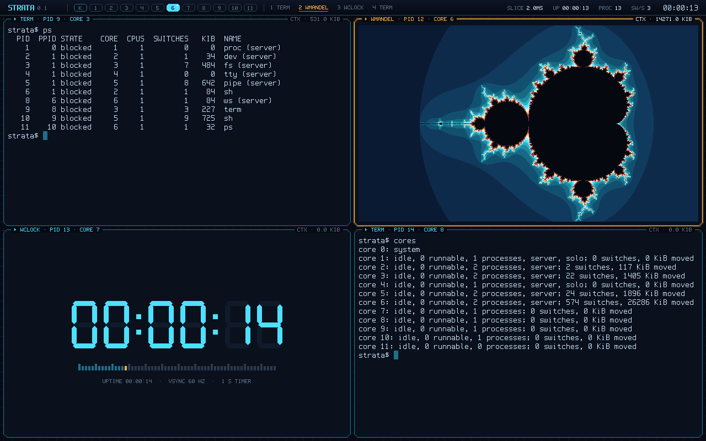
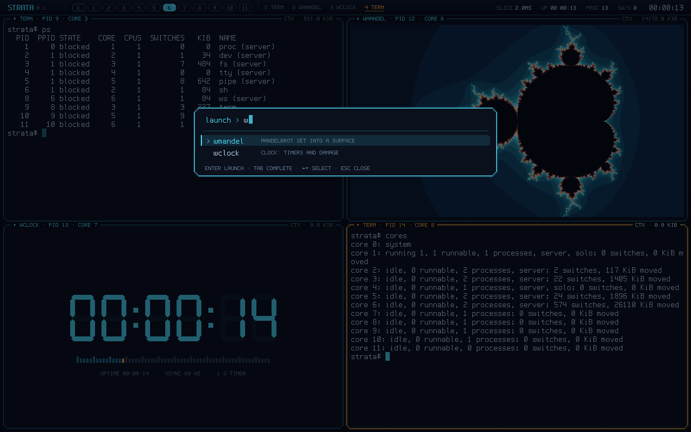
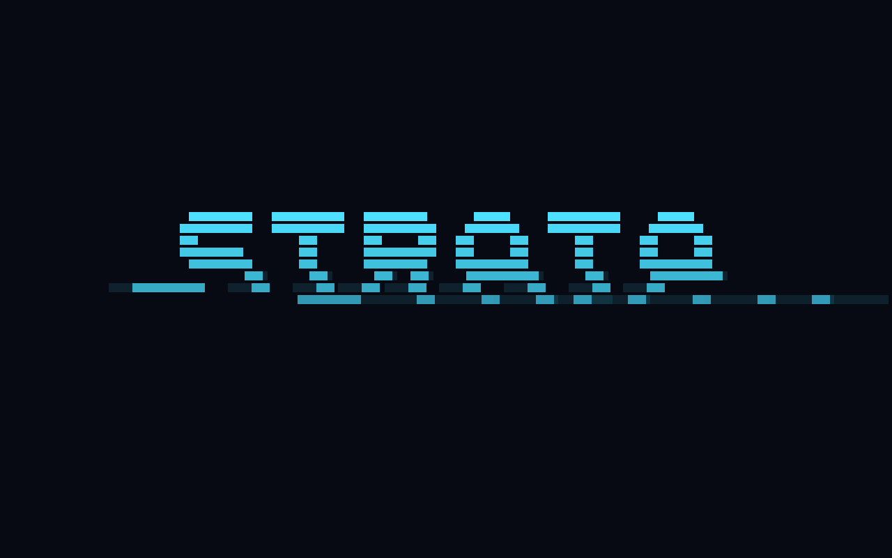
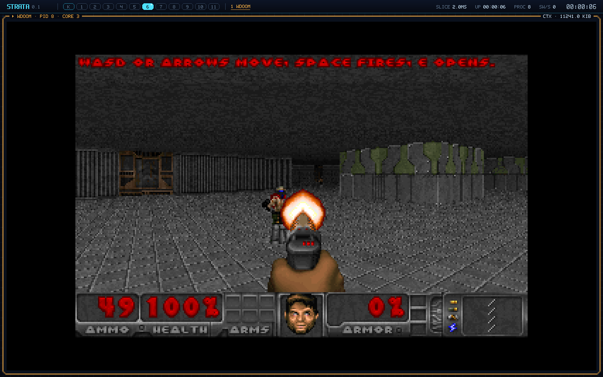
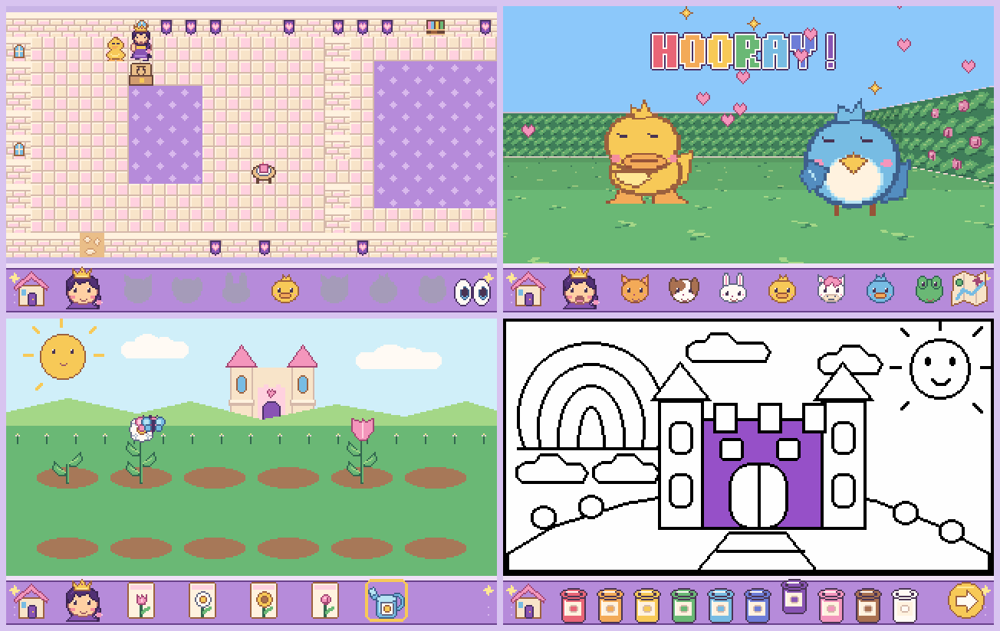
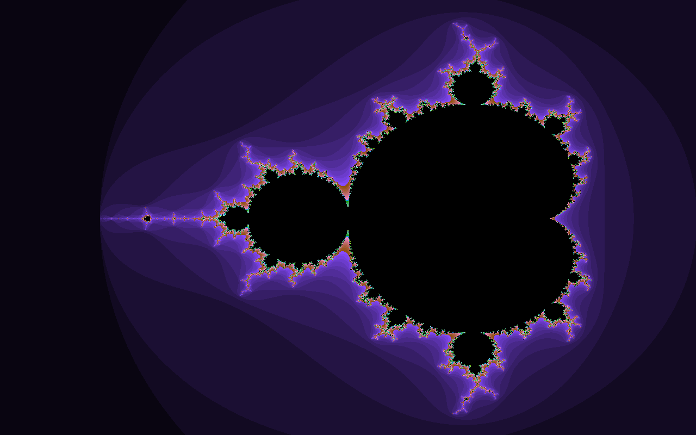

Local Stores, not caches
Loads and stores reach only registers and a 64 KiB data Local Store per core. Instructions come only from a 64 KiB instruction Local Store. L1 is an architectural scratchpad, and software decides what lives there.
A prototype 64-bit instruction set architecture
Memory is explicit I/O. Every storage tier is visible to software. Capabilities name everything. There are no interrupts.
Modern CPUs pretend memory is flat and fast, then spend a third of the chip keeping up the pretence. Strata stops pretending. What software can reach directly is small and fast; everything else is a transfer you ask for, and can overlap with work.
Loads and stores reach only registers and a 64 KiB data Local Store per core. Instructions come only from a 64 KiB instruction Local Store. L1 is an architectural scratchpad, and software decides what lives there.
tget, tput and tgetx move data between tiers
with completion tags. Each takes effect at its issue point; the hardware stalls any
access to a range still in flight. Overlap is a performance choice, never a correctness one.
Far memory is named only through capabilities. Writable ones can be split, joined, given to another core and taken back — never copied. A data race is not something you can write down. Revocation domains take everything back at once.
A device “interrupts” by completing a transfer. tany waits for any of a set
of transfers, or for a capability arriving in the inbox. Ctrl-C is a console read that
completes when you press the key. The timer is a read that completes at a deadline.
; divide the work by dividing ownership
csplit c5, c0, s6 ; c0 = my piece, c5 = the rest
csplit c8, c5, s6 ; c5 = core k's piece
cgive c5, s3 ; hand it over (c5 is now empty)
...
ctake c5, s3 ; take it back from core k only
cjoin c0, c5 ; and glue the array together
; stream far data while computing
tget tg1, a0, c0, t0, t1 ; ask for the next block
... ; work on the current one
twait tg1 ; (loads would wait anyway)A microkernel written in Strata assembly, where the explicit machine shows through instead of being hidden.
A few kilobytes stay resident. The rest of the kernel is code units it loads into its own
instruction store on demand — the same xcall / xmiss mechanism
programs use.
proc, dev, fs, tty, pipe
and the window server ws run in user mode. A message is a lent buffer
capability; programs talk to servers directly, core to core, in hardware.
Preemptive multitasking with a configurable time slice (2 ms by default, down to 100 µs). A switch copies the used Local Store out
and in — the cache flush other CPUs hide. ps shows each process's switches and
kilobytes moved; the window server's core lattice pulses with every one.
strata$ seq 30 | grep 2 | wc # three processes, two pipes strata$ -n 3 mandel & # three threads, time-shared strata$ as < hello.s > hi && hi # the assembler, written in Strata strata$ ps # switches and KiB moved, per process strata$ ws # the window server takes the screen
ws is the only process that touches the framebuffer. It tiles
windows on a grid, and makes the machine visible: the strip at the top has one cell per core,
lit in the colour of the process running there, pulsing on every context switch; each
window's tag shows how many kilobytes its context switches have moved. Clients draw in
their own memory and lend each finished band to the server as a capability; only the server
writes the screen.

ws: two terminals with their own shells,
wmandel and wclock, each a separate process, at 1280×800.
Boot StrataOS in your browser and type ws →
or watch the scripted demo.


wdoom: a first-person shooter in Strata assembly, one more client of
the window server, with art and sounds from Freedoom.
A core's data store is smaller than one frame, so the picture is drawn in ten slabs of 32
columns and every texture column is fetched from far memory.
Play it in your browser →
kira: Princess Kira, four gentle games for a small child in Strata
assembly: find seven animal friends in a castle and garden that are made anew for every
game (seen from above, or through Kira's eyes with the raycaster of wdoom),
plant a garden, colour a page, play a xylophone. No enemies, no timer, no way to lose.
Play it in your browser →A Forth bootstrapped the classic way — a small kernel of primitives in assembly, the rest
of the language defined in Forth — with a modern twist: words compile to native Strata
code. Because stores cannot write instruction memory, every definition is assembled in
data memory, written to far memory and installed with tgetx: a JIT whose
install step you can watch.
far@ / far! through a software cache built on ltag / linstspawn / await across corescatch/throw, see: sq ( n -- n*n ) dup * ; ok
7 sq . 49 ok
see sq
: sq ( xt $8100 , 40 bytes)
8100: addi sp, sp, -8
8104: sd ra, 0(sp)
8108: addi s0, s0, -8
810c: sd s1, 0(s0)
8110: ld t0, 0(s0)
8114: addi s0, s0, 8
8118: mul s1, t0, s1
811c: ld ra, 0(sp)
8120: addi sp, sp, 8
8124: ret
ok
: sum-sq ( n -- ) 0 swap 0 do i sq + loop ; ok
100 sum-sq . 328350 ok
csplit, rendered by workers spawned from the Forth prompt.The reference emulator, compiled to WebAssembly. Boot StrataOS on 12 cores and type at its shell, watch eight cores draw a Mandelbrot set into the framebuffer, or define words in Forth and see them run as native Strata code — no install.
Needs a C compiler and Verilator 5; SDL2 is optional (for the window). Or read it first: the source browser has every assembly and Forth program, syntax-coloured.
makeassembler, emulator and the Verilated RTLmake testevery example and an OS boot on both machines, compared instruction by instructionmake show-gfxopen the framebuffer window and watch eight cores drawmake bootboot StrataOS on the emulatormake fortha Forth prompt on bare metal